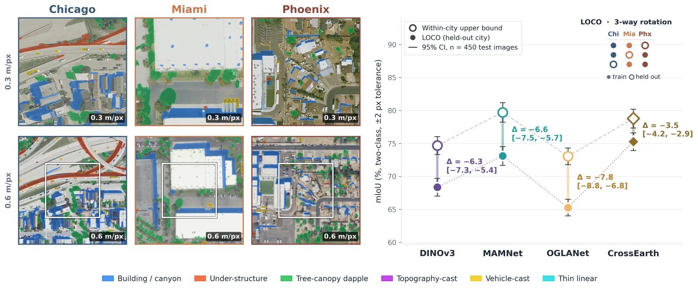
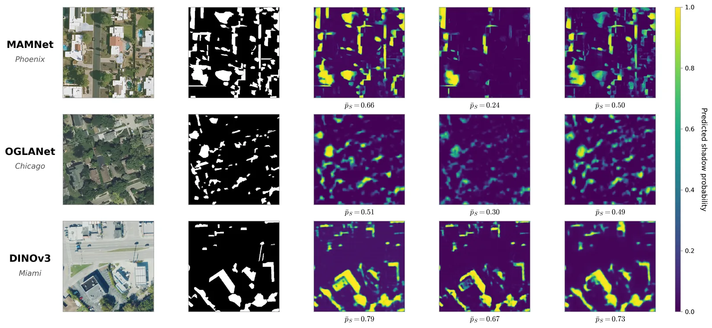
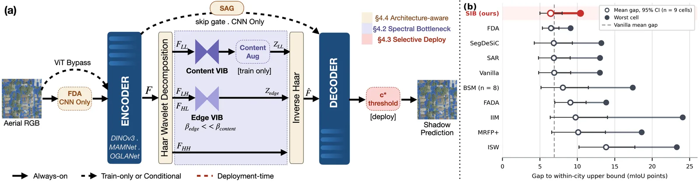
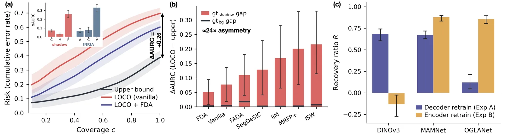

O Problema da Transferência Geográfica em Imagens Aéreas
Modelos de segmentação densa em imagens aéreas de overhead são frequentemente treinados em uma região geográfica específica e implantados em outra. Essa prática é comum em pipelines que estimam irradiação solar, mapeiam ilhas de calor urbanas ou extraem contornos de edifícios. No entanto, a mudança geográfica introduz um desvio de distribuição que os modelos não generalizam bem, resultando em erros significativos. Embora esse seja um problema conhecido em outras áreas, como imagens médicas (diferenças entre scanners) ou classificação de cobertura do solo, faltava uma infraestrutura de avaliação padronizada para detecção de sombras em imagens aéreas.
Os datasets existentes não resolvem essa lacuna. O AISD, o maior conjunto de dados verificado por humanos, possui apenas 514 imagens e não define divisões de treino-teste por cidade. O S-EO escala para dezenas de milhares de imagens, mas utiliza rótulos gerados automaticamente com artefatos de alinhamento conhecidos. Outros benchmarks populares, como ISTD e SBU, focam em imagens em nível de rua, cuja geometria é incompatível com a perspectiva aérea. Sem um protocolo que separe cidades de treino e teste, não é possível medir, diagnosticar ou corrigir a falha de transferência geográfica.
Para preencher essa lacuna, os autores da Purdue University introduzem o ShadowTransfer. Este é o primeiro benchmark que combina rótulos verificados por humanos, múltiplas cidades, múltiplas resoluções nativas e um protocolo definido de transferência geográfica. O objetivo não é apenas fornecer dados, mas criar um instrumento de avaliação para responder à pergunta crítica de implantação: onde e como o modelo falhará quando a cidade mudar?

A Estrutura do Benchmark ShadowTransfer
O dataset ShadowTransfer contém 4.500 máscaras de sombra verificadas por humanos, coletadas em três cidades dos EUA: Chicago, Miami e Phoenix. As imagens são provenientes do NAIP (National Agriculture Imagery Program) e estão disponíveis em duas resoluções nativas de sensor: 0.3 m/px e 0.6 m/px. Cada patch de teste é pareado entre as resoluções, compartilhando as mesmas coordenadas terrestres, o que permite analisar a transferência não apenas geográfica, mas também de resolução.
A anotação não foi feita de forma ingênua. Os autores desenvolveram um pipeline de três fases para equilibrar throughput e qualidade. Na Fase 1, sete anotadores treinados criam rótulos do zero para estabelecer a distribuição. Na Fase 2, um detector intermediário é treinado com esses rótulos para gerar sementes de predição, que os anotadores editam em vez de redesenhar do zero, acelerando o processo. Na Fase 3, ocorre um controle de qualidade retroativo que intersecta os segmentos anteriores com as previsões do modelo final, retornando discrepâncias para arbitragem. Para monitorar a deriva dos anotadores, cada lote de 100 imagens inclui cinco imagens 'gold' com máscaras de referência congeladas, calculando-se o coeficiente Kappa de Cohen.
Cada segmento de sombra recebe uma de seis categorias de tipo, embora o benchmark principal avalie máscaras binárias (sombra vs. fundo). Metadados por patch, incluindo cidade, resolução, longitude/latitude e ID do tile fonte, são liberados junto com o benchmark. Essa riqueza de metadados permite diagnósticos finos sobre a distribuição dos dados, algo ausente em benchmarks anteriores que simplesmente listavam o número total de imagens.
O Protocolo LOCO: Isolando o Desvio Geográfico
O coração da contribuição metodológica é o protocolo LOCO (Leave-One-City-Out). Para cada cidade de teste (holdout), o conjunto de treinamento é amostrado das duas outras cidades em uma proporção fixa de 50/50, resultando em 450 imagens de treino (225 por cidade de treino). O conjunto de validação vem das mesmas cidades de treino, e o conjunto de teste é o pool de 150 imagens da cidade holdout.
Essa estrutura permite calcular um 'limite superior intra-cidade' (within-city upper bound). Esse limite é obtido treinando um modelo apenas com os dados da cidade de teste e avaliando nos dados de teste dessa mesma cidade. A diferença entre o desempenho LOCO e esse limite superior isola estritamente o impacto do desvio geográfico, removendo o efeito do tamanho do conjunto de treinamento. Se o modelo performasse bem no LOCO, a diferença seria pequena; a realidade, como veremos, é diferente.
O protocolo é aplicado em todas as três rotações de holdout e nas duas resoluções nativas, gerando seis células de teste para cada par (arquitetura, método). A métrica primária é o mIoU tolerante a bordas, que inclui uma banda de ±2 pixels de 'não se importa' nas fronteiras. Isso é crucial porque as bordas das sombras são inerentemente imprecisas na anotação em resolução sub-pixel, e métricas rígidas penalizariam erros de alinhamento que não refletem falha semântica real.
Diagnóstico: Onde e Como a Transferência Quebra
Os autores não se limitam a medir a queda de performance; eles propõem um framework de três sondas para diagnosticar a natureza da falha. A primeira sonda investiga o espaço de features. A análise indica que o desvio geográfico opera no espaço de características extraídas, e não apenas na distribuição de histogramas de pixels. Isso significa que técnicas simples de equalização de histograma ou adaptação baseada apenas em estatísticas de pixel são insuficientes, pois não alinham a representação semântica profunda.
A segunda sonda examina a confiança das predições. Sob transferência geográfica (LOCO), observa-se um colapso de confiança nos pixels de sombra (foreground), enquanto a confiança no fundo (background) permanece intacta. Visualmente, isso se traduz em previsões 'lavadas' ou sujas sobre as regiões de sombra verdadeira, em vez de alucinações de sombras onde não há. Métricas binárias como 0/1 podem subestimar esse problema em 2.3x, pois um pixel de sombra com probabilidade 0.4 é considerado erro, mas a sonda de confiança revela que o modelo ainda 'sabe' que há algo lá, apenas com baixa certeza.
A terceira sonda testa a recuperabilidade através de componentes arquitetônicos específicos. Os autores descobrem que a recuperação depende da arquitetura: para o DINOv3, o problema está no decoder e pode ser corrigido ajustando-o; para o OGLANet, o problema está no encoder; para o MAMNet, ambos os componentes precisam de ajuste. Isso sugere que a falha não é monolítica, mas interage de forma diferente com a topologia da rede.

SIB: Uma Solução Plug-in Baseada no Diagnóstico
Guiados por esses três diagnósticos, os autores propõem o Spectral Information Bottleneck (SIB), um módulo plug-in projetado para atacar cada ponto de falha identificado. O SIB não é uma nova arquitetura, mas um conjunto de componentes que podem ser inseridos em pipelines existentes.
O primeiro componente lida com a pré-processamento espectral. Para backbones CNN, ele usa FDA (Frequency Domain Adaptation) para alinhar estatísticas de frequência; para U-Nets, usa SAG (Skip-Attention Guidance) nos skips; e é bypassado para ViTs como o DINOv3, que já possuem mecanismos internos de atenção. O segundo componente é um Information Bottleneck espectral que comprime as features, removendo ruído específico da cidade de treino que não generaliza. O terceiro componente ajusta a confiança do decoder.
A arquitetura do SIB é modular. Por exemplo, no DINOv3, o foco está no bottleneck de conteúdo e na decomposição de Haar, enquanto no OGLANet o ganho vem principalmente da compressão de features no lugar da expansão tradicional. Essa especificidade arquitetônica reforça a conclusão do diagnóstico: não existe uma solução única para todos os modelos, mas sim ajustes direcionados aos gargalos de cada topologia.

Resultados: SIB Concorre com o Estado da Arte
A avaliação do SIB foi feita sobre as 9 células (3 arquiteturas x 3 cidades holdout) no benchmark de alta resolução. O SIB apresentou a menor lacuna média em relação ao limite superior intra-cidade entre os dez métodos avaliados, com uma queda de 6.42 mIoU (IC 95% [5.01, 7.96]). Isso o coloca no mesmo patamar do FDA, que obteve 6.47 mIoU de queda, com diferença estatisticamente insignificante (+0.05, [-0.42, +0.49]).
Em contraste, o treinamento vanilla (sem adaptação) teve quedas médias muito maiores, variando de 3.5 a 7.8 mIoU dependendo da arquitetura, com uma média geral de falha superior. Métodos de adaptação de domínio tradicionais, como SegDeSiC, IIM, MRFP+, FADA e ISW, mostraram desempenho inconsistente. Alguns ajudaram em pares arquitetura-cidade específicos, mas falharam catastróficamente em outros. Em média, seis dos oito métodos de adaptação degradaram mais que o vanilla, sugerindo que a adaptação ingênua pode piorar o alinhamento se o diagnóstico da falha for ignorado.
O SIB também reduziu o erro seletivo de sombra em todas as 9 células (delta médio = -0.199, p = 0.002), mantendo estabilidade para diferentes limiares de confiança. Isso indica que o SIB não apenas melhora a acurácia bruta, mas também a calibração da confiança do modelo, alinhando-se com a segunda sonda de diagnóstico que identificou o colapso de confiança.
Limitações e Escopo
É crucial entender o que o paper NÃO cobre. O benchmark cobre apenas três cidades dos EUA (Chicago, Miami, Phoenix), imagens RGB do NAIP e uma única estação (outono). Isso limita a generalização para morfologias não-grid, sensores multiespectrais ou outras estações do ano. Além disso, apenas quatro arquiteturas foram testadas (DINOv3, MAMNet, OGLANet, CrossEarth), deixando arquiteturas recentes como SegFormer sem avaliação.
Os autores admitem que, embora caracterizem onde a falha ocorre e como ela distorce as previsões, eles não isolam um mecanismo causal completo que conecte todas as observações. Por exemplo, o locus do problema no decoder do DINOv3 não pode ser atribuído apenas à sua arquitetura ViT, pois nenhuma CNN nos testes alcançou a escala de pré-treinamento do DINOv3. A correlação entre arquitetura e ponto de falha pode ser um artefato da capacidade do modelo, não apenas da topologia.
Além disso, o SIB deixa uma lacuna significativa em todas as 9 células. Embora seja o melhor método avaliado, ele não elimina o gap geográfico. Em benchmarks externos como o S-EO, o SIB pode até performar pior que o vanilla em algumas células (1.57 mIoU abaixo), sugerindo que a adaptação é sensível à distribuição específica dos dados de destino.

Conclusão e Impacto
O ShadowTransfer estabelece um novo padrão para avaliação de transferência geográfica em segmentação densa. Ao fornecer um protocolo LOCO rigoroso, um dataset anotado com alta qualidade e um framework de diagnóstico, os autores fornecem à comunidade uma ferramenta para medir o risco real de implantação de modelos de visão computacional em novas regiões.
A descoberta de que a falha opera no espaço de features e se manifesta como colapso de confiança assimétrico muda a forma como devemos abordar a adaptação de domínio. Em vez de aplicar técnicas genéricas de equalização, devemos diagnosticar o componente arquitetônico afetado. O SIB demonstra que módulos plug-in, desenhados com base nesse diagnóstico, podem recuperar parte significativa da performance perdida.
Os autores liberam o benchmark, os splits LOCO, o código de treinamento e os modelos treinados. Isso permite que a comunidade reproduza e estenda os resultados. O paper não vende o SIB como uma solução final, mas como um instrumento de avaliação e um ponto de partida para entender a robustez geográfica de modelos de visão computacional.
O que fica
- O ShadowTransfer é o primeiro benchmark com rótulos humanos e protocolo LOCO para medir a queda de performance em detecção de sombras aéreas entre cidades.
- A transferência geográfica falha no espaço de features, causando colapso de confiança nas sombras, não apenas erro de classificação.
- Métodos genéricos de adaptação de domínio frequentemente falham; a recuperação depende de ajustar componentes específicos da arquitetura (encoder vs decoder).
- O módulo SIB, baseado no diagnóstico, reduz o gap de performance para 6.42 mIoU, competindo com o melhor método existente (FDA).
Paper original: ShadowTransfer: A Geographic Transfer Benchmark for Overhead Shadow Detection
Comentários
Nenhum comentário ainda. Seja o primeiro.